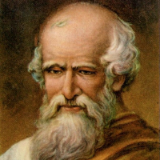

Daftar Isi
- Beranda
- Pythagoras
- Euclid
- Archimdes
- Leonardo Fibonacci
- Isaac Newton
- Leonhard Euler
- Carl Friedrich Gauss
- Georg Cantor
- Alan Turing
Hubungi Admin


JAM
lainnya
10 tokoh berpengaruh dalam matematika
Siapa itu Archimedes?

Sejarah:
Archimedes (skt. 287–212 SM) adalah seorang ilmuwan, matematikawan, fisikawan, insinyur, dan penemu Yunani Kuno yang lahir di kota Syracuse di Sisilia, Italia. Ia merupakan salah satu tokoh terbesar dalam sejarah ilmu pengetahuan dan matematika, dikenal karena kontribusinya yang revolusioner dalam berbagai bidang.
Pemikiran:
Archimedes dikenal sebagai salah satu pemikir terbesar dalam sejarah matematika dan ilmu pengetahuan. Ia mengembangkan metode matematika yang lebih maju, termasuk metode ekshaustif (metode batas dalam bentuk primitif) yang membantu dalam menghitung luas dan volume berbagai bentuk geometris. Ia juga memiliki ketertarikan dalam teori bilangan dan penemuan-penemuan penting dalam bidang ini.
Karya:
Salah satu karya paling terkenal dari Archimedes adalah "On the Sphere and Cylinder" (Tentang Bola dan Silinder) di mana ia mengembangkan metode untuk menghitung volume bola dan silinder serta mengajukan perkiraan nilai π (pi). Ia juga mengeksplorasi hukum pengapungan, yang mengarah pada prinsip-prinsip dasar hidrostatika.
Namun, salah satu kontribusi paling ikoniknya adalah "Archimedes' Principle" (Prinsip Archimedes) yang menyatakan bahwa benda yang dicelupkan dalam fluida akan mengalami gaya apung yang besarnya sama dengan berat fluida yang dipindahkan oleh benda tersebut. Ia menggunakan prinsip ini untuk menghitung volume benda yang tidak beraturan dengan membandingkannya dengan air yang dipindahkan ketika benda tersebut dicelupkan ke dalam air.
Pengaruh dalam Matematika:
Archimedes tidak hanya mengembangkan teori-teori yang revolusioner, tetapi juga menerapkannya dalam aplikasi teknis yang nyata. Pemikirannya dalam matematika membantu mengembangkan metode-metode baru yang menjadi dasar dalam pengukuran, geometri, dan kalkulus. Prinsip-prinsip hidrostatika yang ia formulasi juga memiliki aplikasi dalam ilmu dan teknik perahu, bangunan, dan teknologi lainnya.
Peninggalan Archimedes terus memberikan pengaruh dalam matematika dan ilmu pengetahuan hingga saat ini. Karya-karyanya merupakan titik awal bagi perkembangan konsep-konsep matematika yang lebih canggih dan memainkan peran penting dalam membentuk dasar-dasar pengetahuan matematika modern.